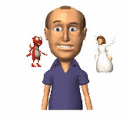

¿Qué son los principios?
Lo podemos definir como un conjunto de valores, normas y creencias que suelen manifestarse por medio de nuestra cultura, nuestra forma de ser, de pensar y de conducirnos. Además, son usados para referirse a fundamentos y o leyes sobre cómo funciona una ideología, teoría, doctrina, religión o ciencia.
Cada uno de nosotros adoptaremos nuestros propios principios de acuerdo a nuestra educación y experiencias, de acuerdo a lo que nuestra conciencia mande, sin embargo, están los principios éticos que son los que compartimos con el resto de la sociedad.
Por otra parte, debemos destacar sobre los principios, que las personas adultas somos responsables de nuestra vida y estos funcionan de cierta manera como guía del actuar.
Recordemos que los principios no son más que la exteriorización de aquellas cosas que el ser humano necesita para desarrollarse conforme y ser feliz, así como formar parte de mejorar las relaciones con la sociedad.
